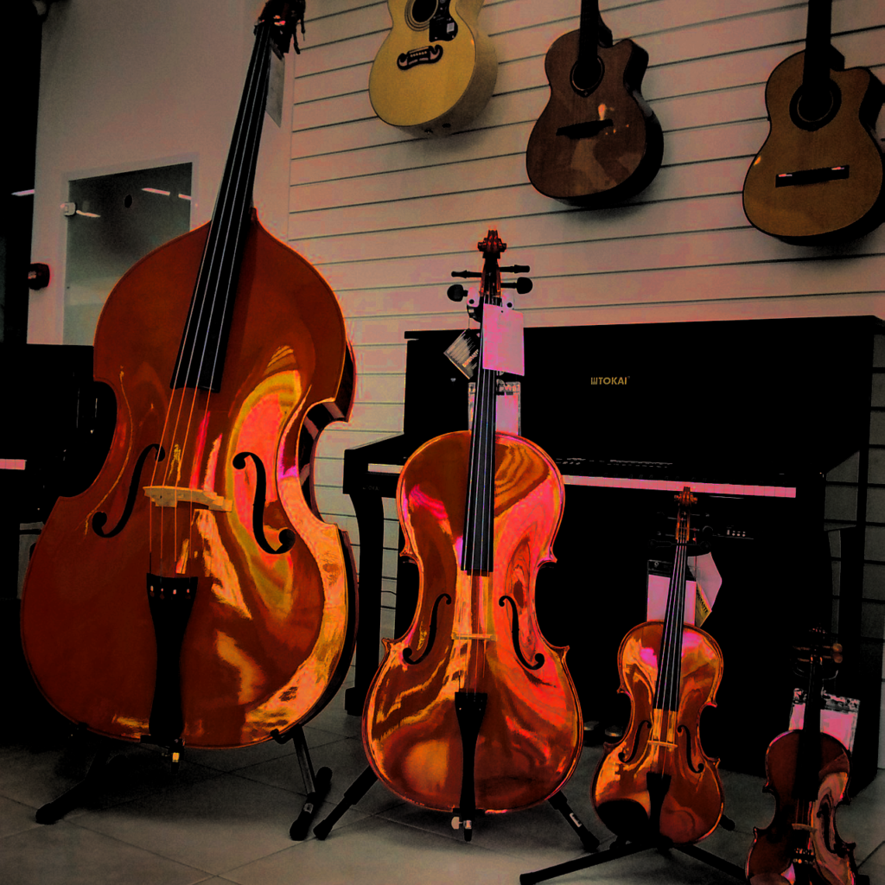
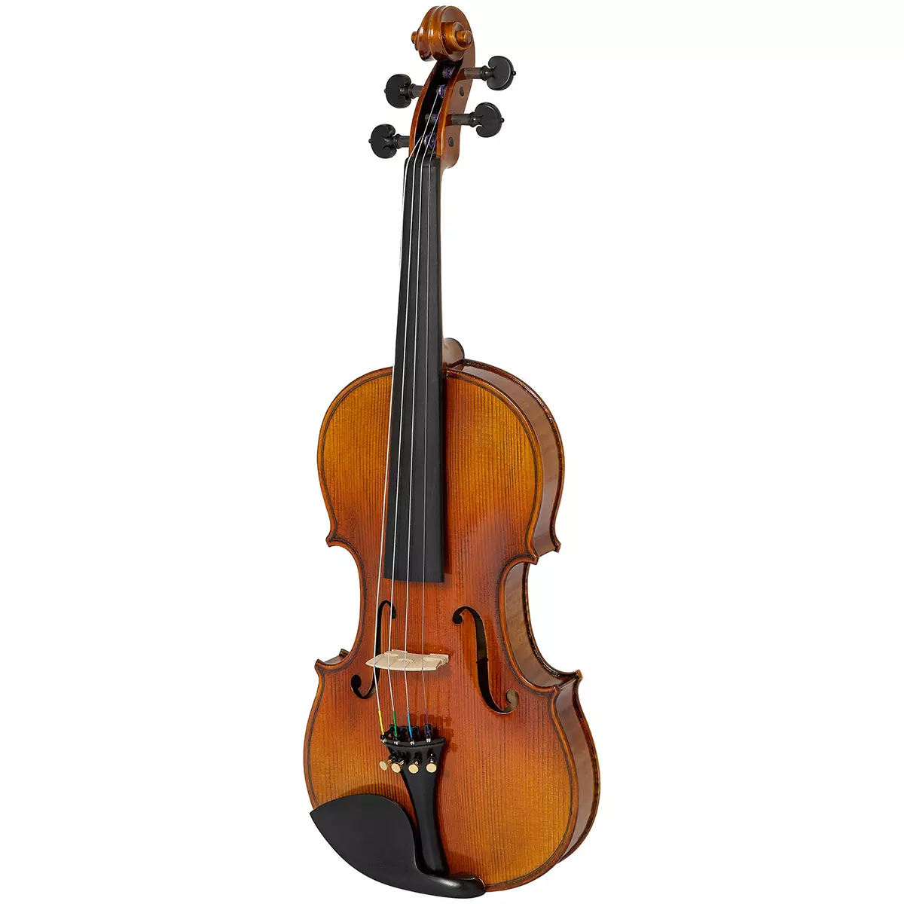
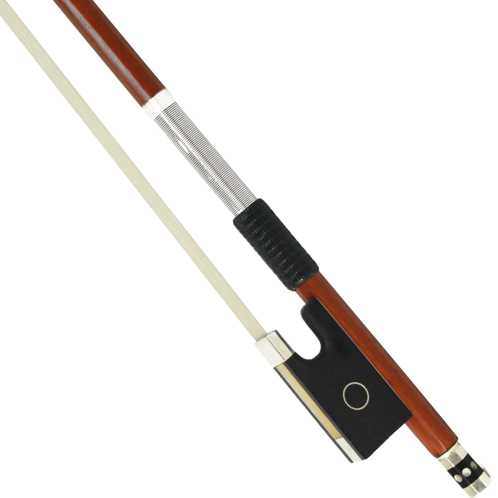
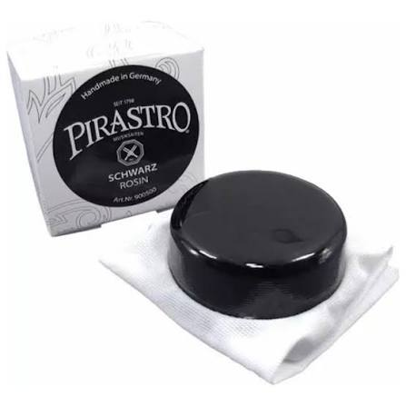

Mundo das Cordas
Conheça mais desse universo
Explore o universo dos instrumentos de cordas. Conheça modelos clássicos, materiais de alta qualidade e acessórios para músicos iniciantes e profissionais.
Ver Modelos
Violino 4/4

Modelo padrão em tamanho real (59 cm) para adultos e jovens, entregando máxima projeção sonora e o equilíbrio de timbres definitivo.
Saiba MaisArco de Pau-Brasil

Referência de excelência feita de madeira densa e elástica, garantindo equilíbrio de peso, resposta rápida e articulação precisa.
Saiba MaisBreu Pirastro Schwarz

Breu escuro de alta aderência para cordas de aço e sintéticas, proporcionando ataque preciso e som brilhante sem excesso de pó.
Saiba Mais